使用说明
单个转化 批量转化
双击图标运行软件 运行后界面如图所示
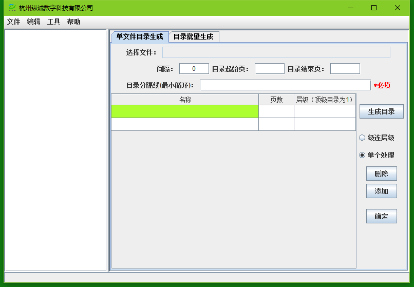
单个转化
- 左上角点击“文件”，选择“打开文件夹”
- 在打开的文件选择对话框中选择pdf文件所在的文件夹，然后点击“选择”
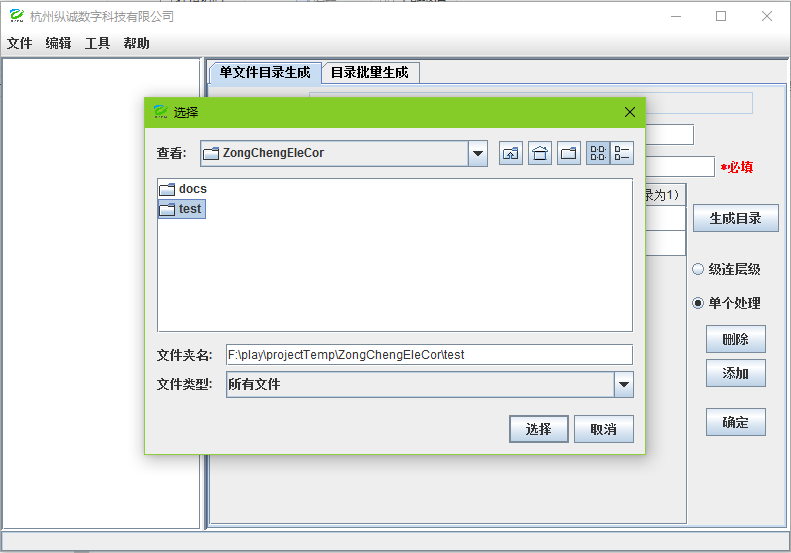
- 展开界面如图所示，在左边显示的pdf文件列表中选择要处理的pdf文件
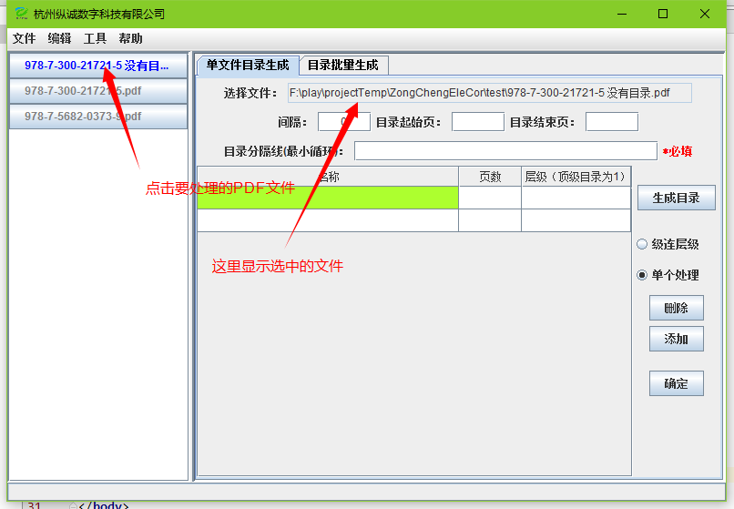
- 设置各个属性，各个属性含义介绍如下
间隔：第一页目录前面的页数
目录起始页：目录起始页码
目录结束页：目录结束页码
目录分割线（最小循环）：目录中标题和页码之间的分割线的最小循环
以《国际礼仪》这本书为例，其各个属性设置如下
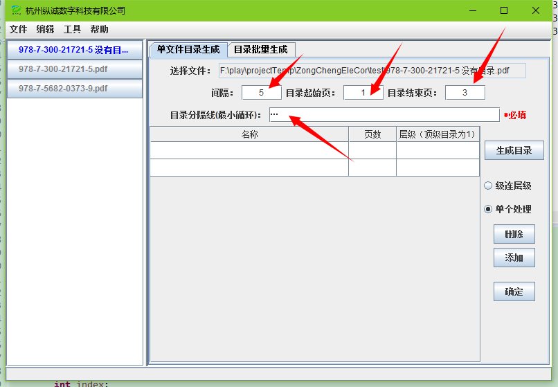
- 点击“生成目录”按钮后，程序按照设定的属性查找目录并显示，如图所示
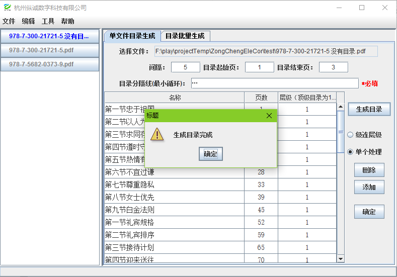
- 目录手动修改:用户可以直接在表格中进行编辑，修改目录内容。在右边可以选择是否级连层级，
如果选择级连层级则在表格中对于“层级”属性的修改后，弃后每行的层级都会和当前修改的这
一行保持一致。反之，单个处理不会影响其后的处理。另外，“删除”和“添加”可以在指定位置
添加和删除一个目录
- 修改完成之后，需要再次设定“间隔”属性，此时间隔是的是pdf开始有页码的那一页前面有几页
以《国际礼仪》这本书为例，这个属性设置如下
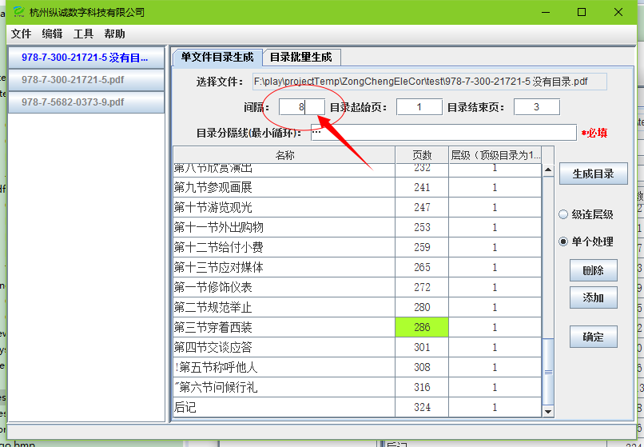
- 最后点击“确定”按钮生成文档，保存在原文件夹下的PDFContentAdder文件夹中
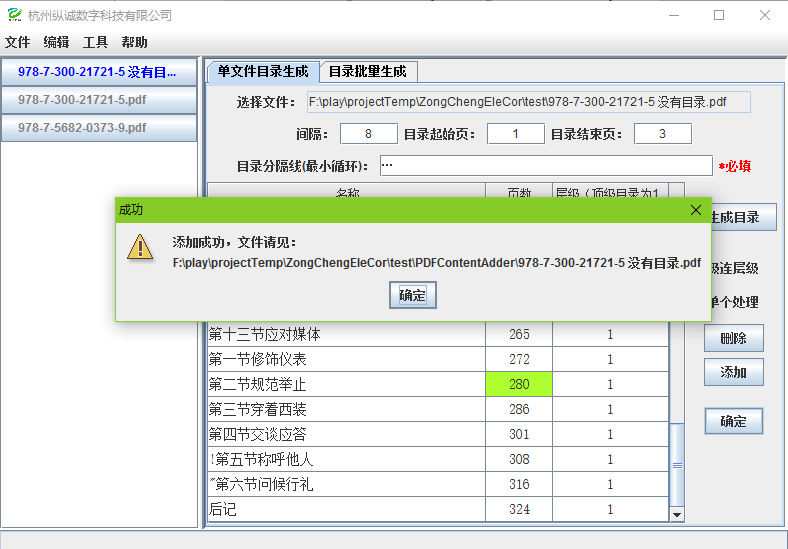
-
批量修改
- 点击“目录批量生成”标签进入目录批量生成界面
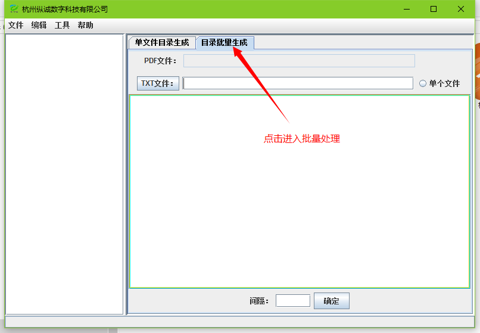
- 菜单栏中点击“菜单”选择“选择文件夹”，在弹出的文件选择框中选择pdf所在的文件夹，点击“选择”
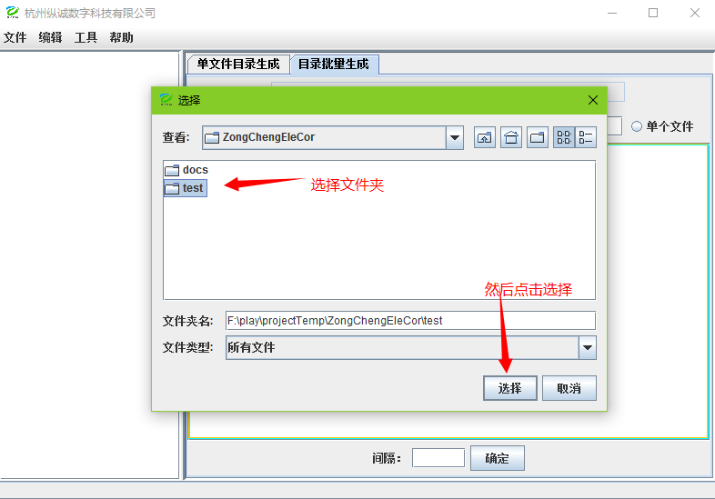
- 如果对应的TXT文件和pdf不在同一个文件夹中，点击“TXT文件夹”按钮，选择TXT文件所在的文件夹
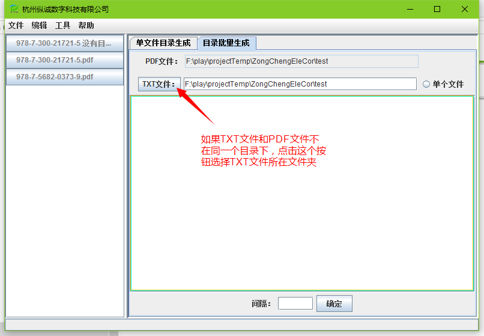
- 确认无误后，点击“确定”按钮，程序开始处理，处理完成之后会显示相应信息，如下图所示
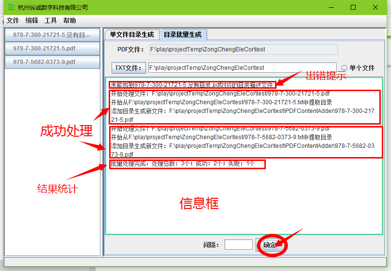